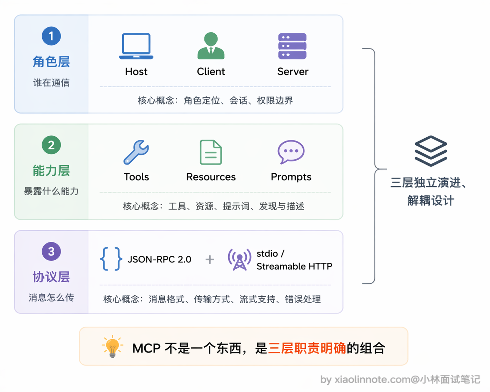
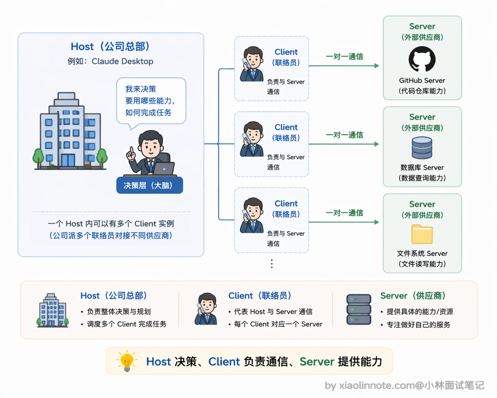
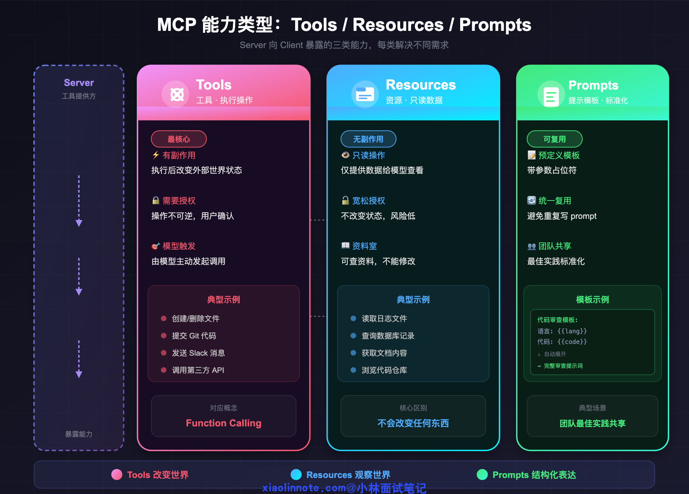
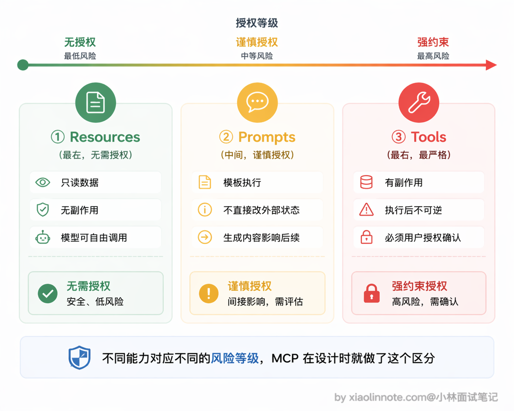
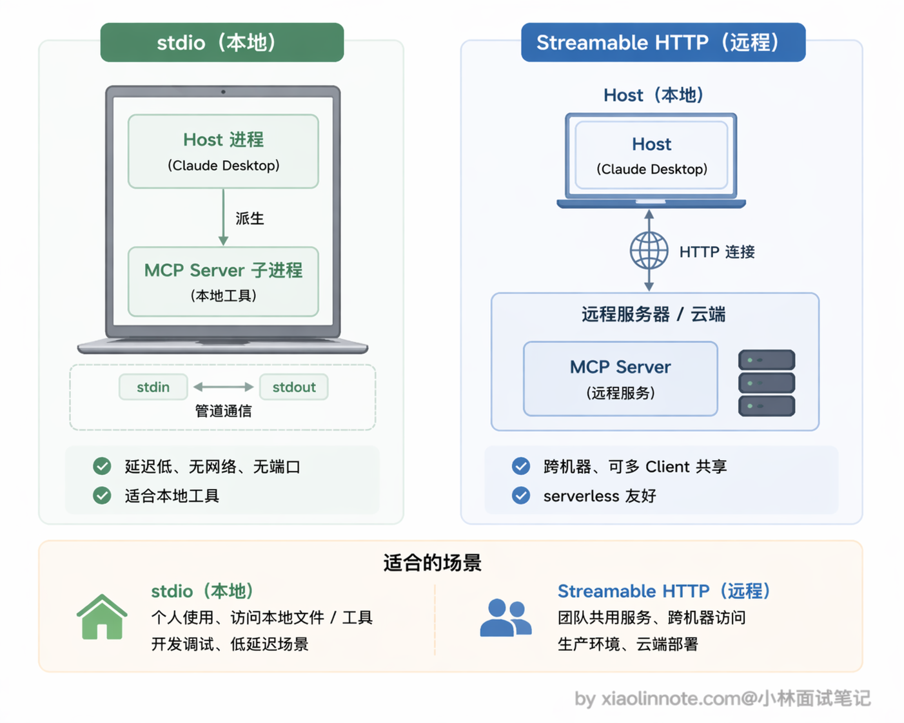
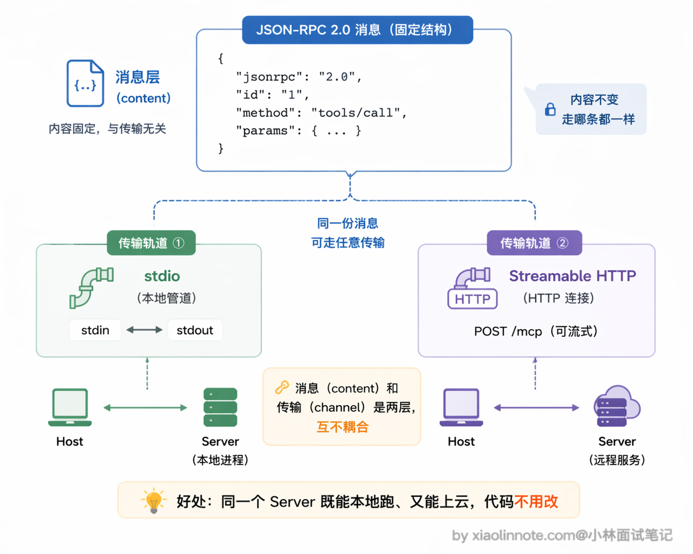

MCP 由哪几部分组成？
👔面试官：说说 MCP 由哪几部分组成？
🙋♂️我：MCP 就是一个协议嘛，主要就是 Client 和 Server 两部分，Client 发请求，Server 返回结果，跟普通的 HTTP 接口差不多。
👔面试官：就 Client 和 Server？那 Host 是什么角色？而且你说「跟 HTTP 接口差不多」，MCP 的能力类型你了解吗？Server 能暴露哪些东西？
🙋♂️我：Host 应该就是 Client 的别名吧？Server 暴露的就是工具，比如调 API、读文件这些，都算工具。
👔面试官：Host 和 Client 是两个不同的角色，Host 是宿主应用，Client 是 Host 里负责通信的模块，一个 Host 可以连多个 Server。而且 Server 暴露的不只是 Tools，还有 Resources 和 Prompts，三者职责完全不同，你把只读数据和有副作用的操作混为一谈了。另外底层的传输协议你也没提，消息格式和传输方式这一层也是 MCP 的核心组成部分。
好吧，MCP 的组成确实不是「Client + Server」这么简单，下面我从三个层次把它拆清楚，看完你就知道每一层各自负责什么了。
💡 简要回答
MCP 由三层组成，可以从角色、能力、协议三个维度来理解。
角色层有三个：Host 是 AI 应用本身（比如 Claude Desktop），Client 是 Host 里负责和 Server 通信的模块，Server 是工具提供方实现的独立进程，一个 Host 可以同时连多个 Server。
能力层定义了 Server 能暴露三类东西：Tools 是有副作用的操作（比如创建文件、调 API），Resources 是只读数据（比如读取文档内容），Prompts 是预定义的提示词模板。
协议层是底层通信：消息格式统一用 JSON-RPC 2.0，传输方式支持 stdio（本地子进程通信）和 Streamable HTTP（远程 HTTP 连接）两种，早期的 HTTP+SSE 双端点方案在 2025 年 3 月的规范更新里被标记为 deprecated。
这三层合在一起，就是 MCP 的完整组成。
📝 详细解析
先建立整体感：三层来看就清楚了
很多人第一次接触 MCP 会被各种概念搞乱，什么 Host、Client、Server、Tools、Resources、Prompts、JSON-RPC、stdio、SSE……一堆名词扔过来，确实容易懵。其实你只要把它拆成三层来看就清楚了：第一层是角色架构，搞清楚谁和谁在通信；第二层是能力类型，搞清楚 Server 能暴露什么东西给模型用；第三层是传输协议，搞清楚消息是怎么传的。
这三层各自独立、互不耦合，合在一起就是 MCP 的完整骨架。下面我一层一层拆开来讲。

第一层：角色架构，Host / Client / Server
MCP 定义了三个角色，弄清楚每个角色负责什么是理解整个系统的关键。
先说 Host。Host 是整个系统的宿主，也就是你在用的 AI 应用本身，比如 Claude Desktop、Cursor、Windsurf。Host 负责启动和管理所有 MCP Client，控制连哪些 Server、什么时候断开连接，是整个 MCP 系统的调度中心。你可以把 Host 理解成一家公司，它决定要和哪些外部供应商（Server）合作，并派出自己的联络员（Client）去对接。
再说 Client。Client 是 Host 内部的连接模块，一个 Client 对应一个 Server 连接。它负责三件事：初始化和 Server 的连接、向 Server 查询「你有哪些工具/资源/模板」（能力发现）、把模型的调用请求转发给 Server 并把结果带回来。Client 是 Host 派出的「驻场联络员」，专门负责和某一个 Server 打交道，Host 本身不直接和 Server 说话。
最后是 Server。Server 是工具提供方实现的独立进程，对外暴露自己的工具、资源和提示词模板。Server 完全不关心上面是哪个 Host 在用它，只需要按 MCP 协议响应 Client 的请求就行。这也是 MCP 的核心价值所在：Server 写一次，任何支持 MCP 的 Host 都能直接用，GitHub 的官方 MCP Server 不需要分别为 Claude Desktop 和 Cursor 各写一份。
三者的关系用图来看是这样的：

一个 Host 同时连多个 Server，模型就同时拥有了所有这些工具能力，而应用代码完全不需要为此多写一行。
第二层：能力类型，Tools / Resources / Prompts
理解了角色分工，接下来看 Server 到底能暴露什么给 Client。很多人以为 Server 就只提供「工具」，其实不止，MCP 定义了三类能力，每类解决不同的需求，设计上有明确的职责分工。

第一类是 Tools（工具），这是最核心、使用最频繁的能力，对应的是有副作用的操作，执行之后会改变外部世界的状态。创建文件、提交代码、发送 Slack 消息、调用第三方 API，都属于 Tools。由模型主动触发，执行有不可逆性，所以通常需要用户授权确认。Tools 对应 Function Calling 里「函数」的概念，只是在 MCP 框架下被标准化打包了。
第二类是 Resources（资源），这是只读数据，没有任何副作用，只是把数据提供给模型看。读取日志文件、查询数据库记录、获取文档内容，都是 Resources。和 Tools 最本质的区别是什么呢？Resources 不会改变任何东西，可以更宽松地暴露，不需要像 Tools 那样谨慎授权。你可以把 Resources 理解成「工具的资料室」，可以进去查资料，但不能修改里面的东西。
第三类是 Prompts（提示模板），这是预定义的提示词模板，带参数占位符。它解决的是「每次都要手写重复 prompt」的问题。比如把团队固定的代码审查标准封装成模板，接受「编程语言」和「代码内容」两个参数，调用时只需传参，自动展开成完整提示词，不用每次从头写。这个能力特别适合团队内部的最佳实践共享，把积累的优质 prompt 模板化，所有人统一复用，标准也更一致。
三者的本质区别可以这样记：Tools 改变世界，Resources 观察世界，Prompts 结构化表达。

第三层：传输协议，JSON-RPC 2.0 + 传输方式
Client 和 Server 之间的通信由两部分组成：消息格式和传输方式，这两层是解耦的。
消息格式统一用 JSON-RPC 2.0。每条消息是一个 JSON 对象，格式固定：Client 发请求时说清楚「调哪个方法、参数是什么、这次请求的 ID 是多少」，Server 返回响应时带上执行结果或错误信息，通过 ID 匹配请求和响应。用 JSON 格式的好处是易读、易调试、任何编程语言都能实现，不管 Server 是 Python 写的还是 TypeScript 写的，消息格式是一样的。
// Client 向 Server 查询工具列表
{"jsonrpc": "2.0", "id": 1, "method": "tools/list", "params": {}}
// Server 返回工具列表
{"jsonrpc": "2.0", "id": 1, "result": {"tools": [{"name": "read_file", ...}]}}
// Client 请求调用某个工具
{"jsonrpc": "2.0", "id": 2, "method": "tools/call", "params": {"name": "read_file", "arguments": {"path": "/tmp/log.txt"}}}
那消息格式定了，怎么传呢？MCP 支持两种传输方式，适合不同的部署场景。
第一种是 stdio（标准输入输出），Server 作为本地子进程运行，Host 通过操作系统的管道和它通信，Server 从 stdin 读请求、把结果写到 stdout。这种方式适合本地工具，不需要网络，延迟极低，也没有端口占用和网络安全问题，Claude Desktop 接本地 MCP Server 走的就是这种方式。
第二种是 Streamable HTTP，Server 作为 HTTP 服务独立部署，Client 通过 HTTP 连接和它通信。这种方式适合远程部署的场景，支持多个 Client 共享同一个 Server，比如团队共用一个部署在服务器上的数据库 MCP Server，所有人连同一个服务，不需要各自本地跑一份。

这里有个演进要说清楚：MCP 早期（2024-11-05 规范）的远程传输方案叫「HTTP + SSE」，是双端点结构，一个 GET 端点开 SSE 接收 Server 推送，一个 POST 端点用来发请求。这套方案在 2025 年 3 月的规范更新里被改成了单端点的 Streamable HTTP（老的 HTTP+SSE 被标记为 deprecated，但保留向后兼容）。
Streamable HTTP 并不是抛弃 SSE，而是把双端点合并成一个 /mcp。Client 用 POST 发请求，Server 根据情况灵活返回：短请求直接回普通 JSON，长请求则把 HTTP 响应升级为 SSE 流持续推送中间结果。这样一个端点就能干完所有事，对负载均衡器和 serverless 环境都更友好。
这里有一个很重要的设计点：消息格式（JSON-RPC 2.0）和传输方式（stdio / Streamable HTTP）是解耦的，同一套 JSON-RPC 消息可以跑在任意传输层上，切换传输方式不影响上层的工具调用逻辑。这个设计让 MCP Server 既可以轻量地作为本地进程运行，也可以作为正式的微服务部署，实现方式灵活但协议层始终一致。

🎯 面试总结
回到开头踩的雷，最大的问题是把 MCP 简单理解成「Client + Server」的二元结构，忽略了 Host 这个角色。
面试回答这道题，第一个要点是三层结构要说清楚：角色层（Host / Client / Server）、能力层（Tools / Resources / Prompts）、协议层（JSON-RPC 2.0 + stdio / Streamable HTTP）。
特别是 Host 和 Client 的区别，Host 是宿主应用本身，Client 是 Host 内部负责和 Server 通信的模块，一个 Host 可以同时连多个 Server，这个一对多的关系是 MCP 的核心设计。
第二个容易踩的雷是把 Server 暴露的能力全归为「工具」。Tools、Resources、Prompts 三者职责分明，Tools 有副作用、改变外部状态，Resources 是只读数据、没有副作用，Prompts 是提示词模板。面试时说清楚三者的区别，尤其是 Tools 和 Resources 的本质差异（有无副作用），会让面试官觉得你真正理解了 MCP 的设计意图，而不是只停留在表面。
第三个要提到的是协议层的解耦设计：消息格式和传输方式是独立的，JSON-RPC 2.0 定义了消息长什么样，stdio 和 Streamable HTTP 定义了消息怎么传，两者互不耦合，这也是 MCP 灵活性的来源。